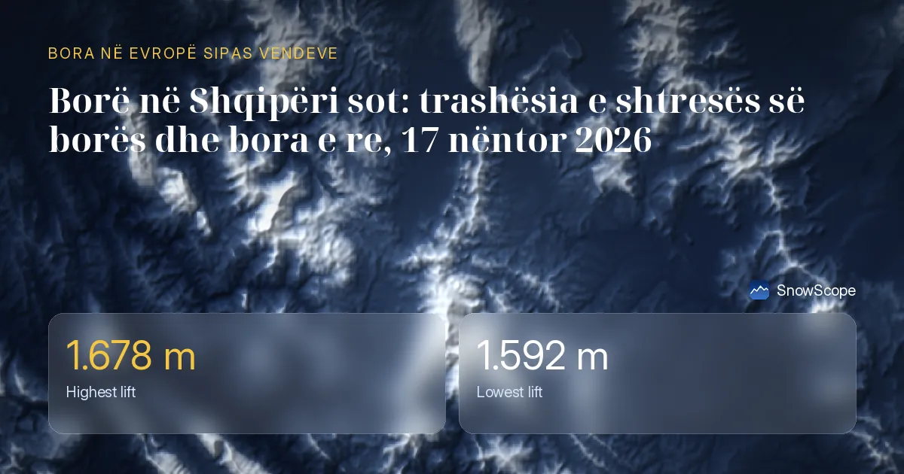
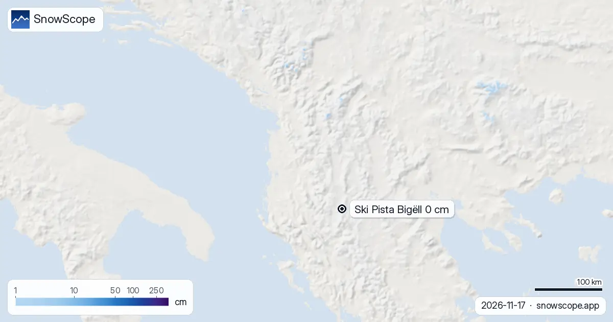

Borë në Shqipëri sot: trashësia e shtresës së borës dhe bora e re, 17 nëntor 2026
Në Shqipëri sot rreth 60 km² janë nën borë (e martë, 17 nëntor). Kjo është 80 km² më pak se dje.
Shihni parashikimin e borës për Ski Pista Bigëll në aplikacionin SnowScopeTrashësia e borës, njoftime dhe harta 3D, falas.
Shtresa e borës sot
Kjo është afër 30 km² të një jave më parë. Terreni është kryesisht i bardhë nga rreth 2.200 m e lart.
| Qendra | Trashësia e borës | Borë e re, 72 orë | Ditët në vijim | Maja |
|---|---|---|---|---|
| Ski Pista Bigëll | 0 cm | 0 cm | 0 cm | 1.678 m |

Trashësia e borës sipas lartësisë
Trashësia mesatare e borës sipas lartësisë: 2.000–2.500 m: mesatarisht 1 cm (24 % nën borë).
Ku ra borë e re
Në tri ditët e fundit pothuajse nuk ra borë: maksimumi është 1 cm.
Çfarë do të thotë për pistat
Moti i butë po e shkrin shtresën: borë e fortë në mëngjes, e lagësht pasdite.
Me më shumë borë në parashikim, ditët në vijim duhet të jenë më të mira.
Qendrat më të mira tani
Asnjë nga qendrat që ndjekim (1) nuk ka ende borë në pista.
Ditët në vijim
Java mund të sjellë deri në 16 cm, nga të cilat deri në 1 cm në tri ditët e ardhshme.
Dita me më shumë borë: e hënë, 23 nëntor, deri në 9 cm.
Këshilla për skiatorët
- Para skijimit jashtë pistave lexoni buletinin vendor të ortekëve.
- Para nisjes kontrolloni nëse teleferikët punojnë.
About these numbers
Resort snow depths are the deepest snow on the resort's upper slopes from the SnowScope snow model (about 1 km, run of 17 nëntor); they are estimates for an area, not a measurement at one point. Station values are measurements on the date shown. Forecasts can change. Always read the official avalanche bulletin before going off-piste.
Cite this report
For research, teaching or the press: the numbers and charts are free to reuse under CC BY 4.0 with this citation.
SnowScope (2026), Borë në Shqipëri sot: trashësia e shtresës së borës dhe bora e re, 17 nëntor 2026, https://snowscope.app/blog/sq/2026/11/albania-snow-report-17-november-2026.html, accessed 2026-11-17
SnowScope (Atlas Labs). (2026, November 17). Borë në Shqipëri sot: trashësia e shtresës së borës dhe bora e re, 17 nëntor 2026. SnowScope snow reports. https://snowscope.app/blog/sq/2026/11/albania-snow-report-17-november-2026.html
BibTeX
@misc{snowscope2026albaniasnowreport17novem,
author = {{SnowScope (Atlas Labs)}},
title = {Borë në Shqipëri sot: trashësia e shtresës së borës dhe bora e re, 17 nëntor 2026},
year = {2026},
month = nov,
howpublished = {\url{https://snowscope.app/blog/sq/2026/11/albania-snow-report-17-november-2026.html}},
note = {Published 2026-11-17 13:09 UTC; accessed 2026-11-17}
}· CC BY 4.0 · Methods, data and tools →
Ski Pista Bigëll: snow and temperature by height, this winter vs last (tools) →
Follow Ski Pista Bigëll
Falas: një mesazh kur vjen borë e re dhe parashikimi çdo mëngjes.